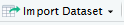
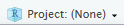
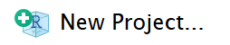
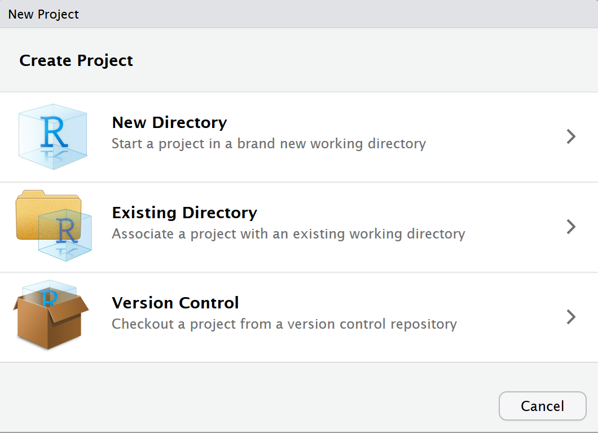
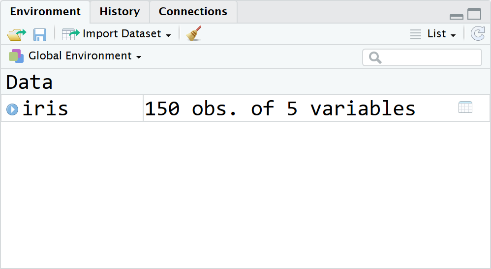

2 Managing Projects
2.1 Introduction to the R User Community
First of all, one of the best things about using R and R Studio is the vibrant and supportive community that wants to help you learn! The following materials are heavily adapted from Chester Ismay and Patrick Kennedy’s Getting used to R, RStudio, and R Markdown. In addition, we will include materials from Garrett Grolemund’s Master the Tidyverse.
On social media, the #rstats and #tidytuesday tags are great ways to see what others are doing in R and to learn new things.
2.2 Introduction to Projects and Working Directories
Workflow is an important aspect of any data analysis project. It saves you time, allows for better collaboration, and reproducibility of analysis. Workflow is definitely one of R’s strengths, as the R/RStudio environment was designed to support a productive and seamless workflow for analysis projects.
2.2.1 Working Directories
In R Studio, go to your lower left hand pane and be sure you are on the Files tab. Click on and select Go to Working Directory. Whatever folder is displayed is your working directory.
The Working Directory is where R looks for files, images, folders, etc. that you want to read into R. If you have a data set you want to load into R you could use the , but for reproducibility and ease, it is easier to write a script to read in your data.If data.csv is in your working directory, this is easy and straightforward:
newdata<-read.csv("data.csv")If it is not, then you would have to tell R the full path name to the location on your computer where the data is stored:
newdata<-read.csv("C:/Users/admin/Foldername1/Foldername2/data.csv")You can manually set the working directory from the settings, but again, the advantage of R is to move away from manual tasks to automated tasks. To easily set a working directory for an analysis project, the best workflow option is to create a “PROJECT” in R.
2.2.2 Projects in R
“When starting a new R project, it is good practice to create a new RStudio project to go along with it. RStudio project files have the extension .Rproj and store metadata and information about the R environment you are working in. More information about RStudio projects is available from RStudio, Inc.” (Ismay and Kennedy).
In the creation of an R Project, a working directory is automatically set when the project is opened. In addition, all created content (images, new data files, output files) is stored within the Project folder.
Let’s create our first R Project and put a data file into the folder.
In the top right corner of R Studio is the . Click and then select . Or you can go to File in the top left corner and select New Project.
Select “New Directory” 
Select and then type in the name “First_Project” into the Directory Name. You may also set the location of the file folder that will be created for the project using the Browse… button. Then click Create Project.
Congrats! You just created your first R Project. Notice that in your files you have a special file type called . The process created a new folder and a .Rproj file. The .Rproj file, when opened, will set the working directory to the folder it is located.
When a new project is created RStudio:
Creates a project file (with an
.Rprojextension) within the project directory. This file contains various project options and can also be used as a shortcut for opening the project directly from the file system.Creates a hidden directory (named .Rproj.user) where project-specific temporary files (e.g. auto-saved source documents, window-state, etc.) are stored.
Loads the project into RStudio and display its name in the Projects toolbar (which is located on the far right side of the main toolbar).
Now download the data set iris.csv and save it into the R project file location. Notice that it appears in the working directory. We can then load the data into R using the following command
iris<-read.csv("Data/iris.csv")Notice that it appears in the environment as a data frame:
 We can now start the analysis of the data!
summary(iris) X Sepal.Length Sepal.Width Petal.Length
Min. : 1.00 Min. :4.300 Min. :2.000 Min. :1.000
1st Qu.: 38.25 1st Qu.:5.100 1st Qu.:2.800 1st Qu.:1.600
Median : 75.50 Median :5.800 Median :3.000 Median :4.350
Mean : 75.50 Mean :5.843 Mean :3.057 Mean :3.758
3rd Qu.:112.75 3rd Qu.:6.400 3rd Qu.:3.300 3rd Qu.:5.100
Max. :150.00 Max. :7.900 Max. :4.400 Max. :6.900
Petal.Width Species
Min. :0.100 setosa :50
1st Qu.:0.300 versicolor:50
Median :1.300 virginica :50
Mean :1.199
3rd Qu.:1.800
Max. :2.500 *Teaching Tip: Students often forget to check their working directory and/or forget to open the .Rproj file first to set the working directory with the project. As a result, students often get the error that the file is not found. Show them best practice by always opening the .Rproj first and have them check the working directory is set correctly.*Now it is your turn! Under the Files tab of the bottom left panel in RStudio, select New Folder. Call the New Folder “Data”. Now move the file TeslaBatterySurvey.csv into the “Data” folder. Does the following code work to import the data? How would you modify the following code to import the data correctly into R?
tesla<-read.csv("cleanTeslaBattery.csv")Solution
tesla<-read.csv("Data/cleanTeslaBattery.csv")2.3 More Resources on Projects
To learn more about version control and other features of R Projects, see the following RStudio Support Documenation on Using Projects and this introduction to Workflow: projects from R for Data Science.